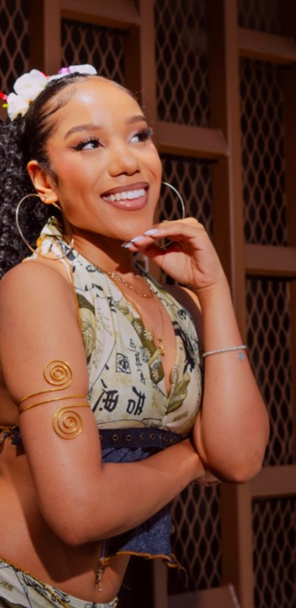
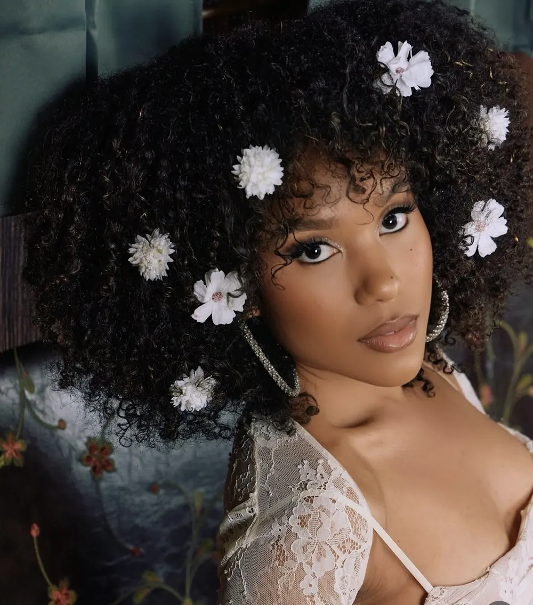

Music, Performance, Acting, Influencer
A Harmonious Blend of Cultures and Sounds
Chizuko weaves her heritage into music, creating a vibrant tapestry of sound and self-expression.
Cultural Soundscape
From the moment I could reach the piano keys, music has been my lifeline. I was that kid who danced in the living room, inspired by the Cheetah Girls and Hannah Montana, dreaming of taking the stage myself. It was in church, singing with the praise team, that I truly discovered my calling—a revelation that ignited my passion for writing music.
Reflecting on my first public performance, I realize just how much I've evolved. Once terrified of the spotlight, I've grown into someone who embraces it. My stage presence has blossomed, and with each performance, I carry an unwavering confidence in my art. This journey of self-discovery and growth has been one of the most rewarding aspects of being an artist.
Mission Behind My Art
Inspired by my grandmother, Chizuko Seki Murata, I strive to bring light and joy to the world through music. Each lyric, melody, and movement is not just a reflection of my story but an invitation for others to embrace their own. I aim to uplift and unite, and it's this mission that fuels my creativity.
I embrace my growth as an artist.
“I embrace all of my growth”Chizuko

Unique Cultural Blend
My background is a rich tapestry of African American and Japanese heritage. This unique mix informs my style, allowing me to create soulful stories through genre-bending sounds. I weave both English and Japanese into my music, which not only honors my roots but also inspires my career.
In an industry that often tries to fit us into boxes, I refuse to compromise my authenticity. I am a complete artist, embracing every part of my culture and personality. I believe that true success comes from being unapologetically myself, crafted by God.
Staying Grounded
In an ever-evolving industry, I find balance by surrounding myself with loved ones and staying grounded in my faith. Journaling is a sacred ritual for me, allowing me to reflect and reconnect with my essence. It's the small joys that keep me rooted.
One significant turning point was when I auditioned for The Voice at 19. I didn’t make it past the first round, which was devastating after months of preparation. But that rejection became my motivation—an affirmation that sometimes, God redirects us for a reason. I’m grateful for that experience because it shaped who I am today.
Daily Life
Mornings begin quietly for me. I catch up on socials and emails, but I always carve out time for journaling and Bible study. It’s essential for me to spend my mornings with God before diving into the chaos of the day.
A typical day involves vocal warm-ups, practicing my music, and preparing for performances. After the adrenaline of live shows, I return to tackle emails and social media. My day often ends around 2 AM, a routine that fuels my passion.
Milestones Achieved
One of my proudest moments was headlining Yoshi's in Oakland, my hometown. The feeling of selling out that venue was surreal. Additionally, I had the honor of writing for one of my inspirations, Jordan Sparks, on an album that was considered for a Grammy. Those achievements signify my growth and potential.
I hope to instill confidence in my audience. I want them to recognize their worth and never settle for less than they deserve. The world will try to undervalue your talent, but staying close to God and remembering your worth is vital.
Future Aspirations
On my vision board is a dream project: performing at the Grammys and earning a Grammy myself. Collaborating with artists like Jhené Aiko and Mariah The Scientist would be incredible. They inspire me, and I aspire to create music that resonates with many.
For those starting their artistic journey, my advice is to stay close to God and remain true to yourself. In a world where many wear masks, authenticity remains crucial. Talenthub Online has been instrumental in helping me navigate this industry, allowing me to showcase my artistry and build my brand effectively.
As I continue to create, I carry my story and mission into every note.
Originally published in Spotlight on TalentHub Online. See more Spotlight stories.
- Artist
- Chizuko
- Work
- Music, Performance, Acting, Influencer
- Hometown
- Oakland
- On the cover
- R&B, J-Pop & the Bay. From CalArts to prime time: songwriting for Jordin Sparks & hit TV. Live at Yoshi’s, headlining Oakland.
- Original article
- talenthubonline.com/spotlight